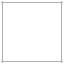
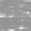

Bowls
Bowls
Bowls are a versatile tool which can be used to make Salads, to make Soups, to Salt meat, or to apply Powder to Glass in order to change the resulting glass's color.
Bowls can be made both from Ceramic, by knapping a bowl out of clay, and then firing them.


Multiple unfired bowls can be made from one knapping.
Wooden Bowls


Bowls can also be made out of wood via crafting them together with Glue
Glue can be made by soaking Bone Meal in a barrel of Limewater.



7200 Ticks
Powders
The Powder Bowl can hold up to 16 of a given powder. To insert items, Right Click while holding the powder. To extract items, Right Click with an empty hand.
Shift allows extracting the entire contents of the bowl.

Salt
If there is salt in the bowl, clicking with unsalted raw meat will salt the meat. This is the same as crafting the meat with the salt in your inventory.